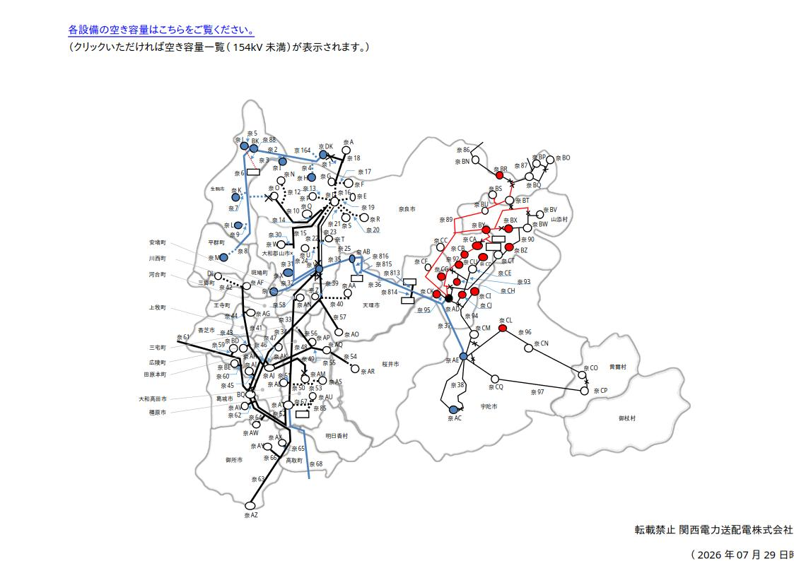

| Symbol | ||||
|---|---|---|---|---|
| Low near-term likelihood of routine output curtailment | No spare capacity / batch generator-interconnection review in progress / capacity-upgrade construction in progress | Possible routine output curtailment | ||
| Electrical facilities |
Substation | |||
| Switching station | ||||
| Power plant (data provided to improve simulation accuracy) |
||||
| Power plant (all others) |
||||
| Transmission lines — overhead |
77kV, own company | |||
| 77kV, other company | (other co.) | (other co.) | (other co.) | |
| 22/33kV, own company | ||||
| 22/33kV, other company | (other co.) | (other co.) | (other co.) | |
| Transmission lines — underground |
77kV, own company | |||
| 77kV, other company | (other co.) | (other co.) | (other co.) | |
| 22/33kV, own company | ||||
| 22/33kV, other company | (other co.) | (other co.) | (other co.) | |
